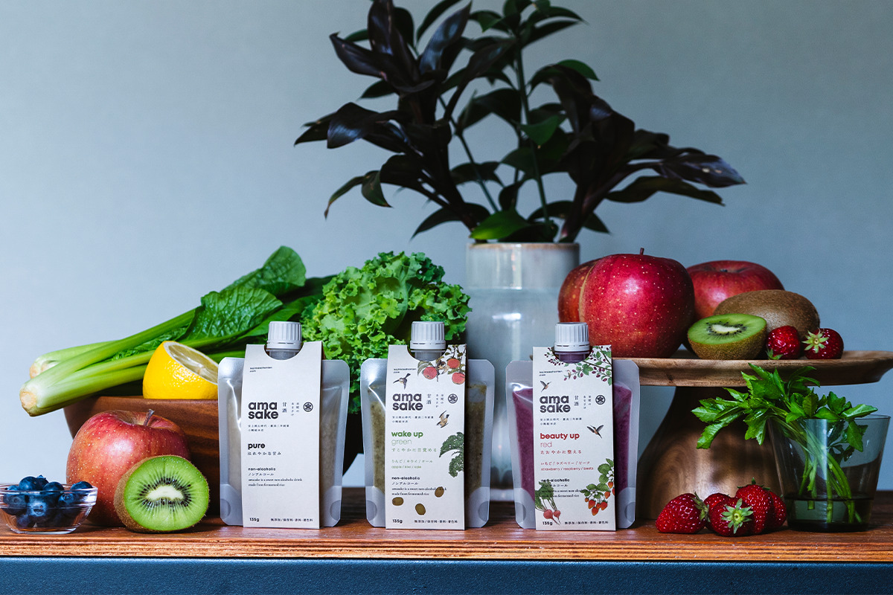
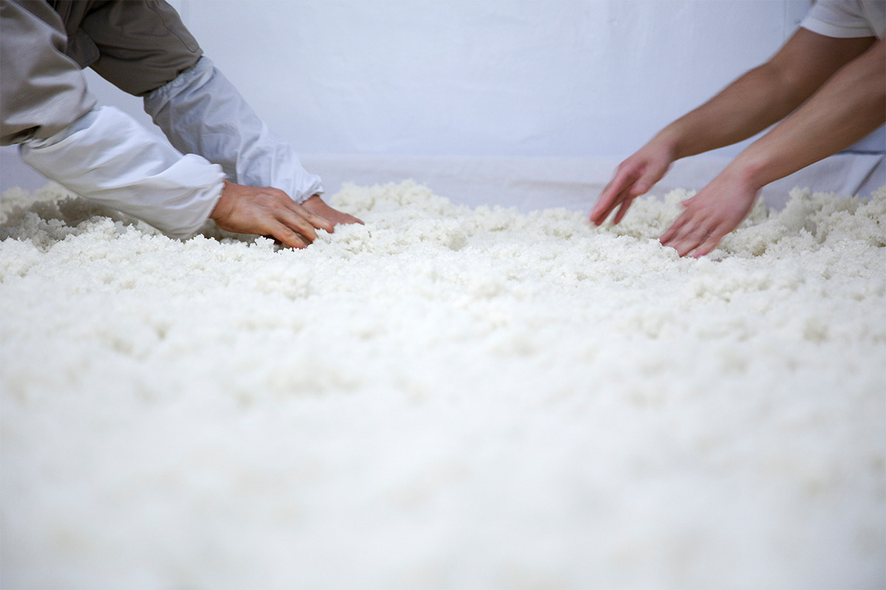
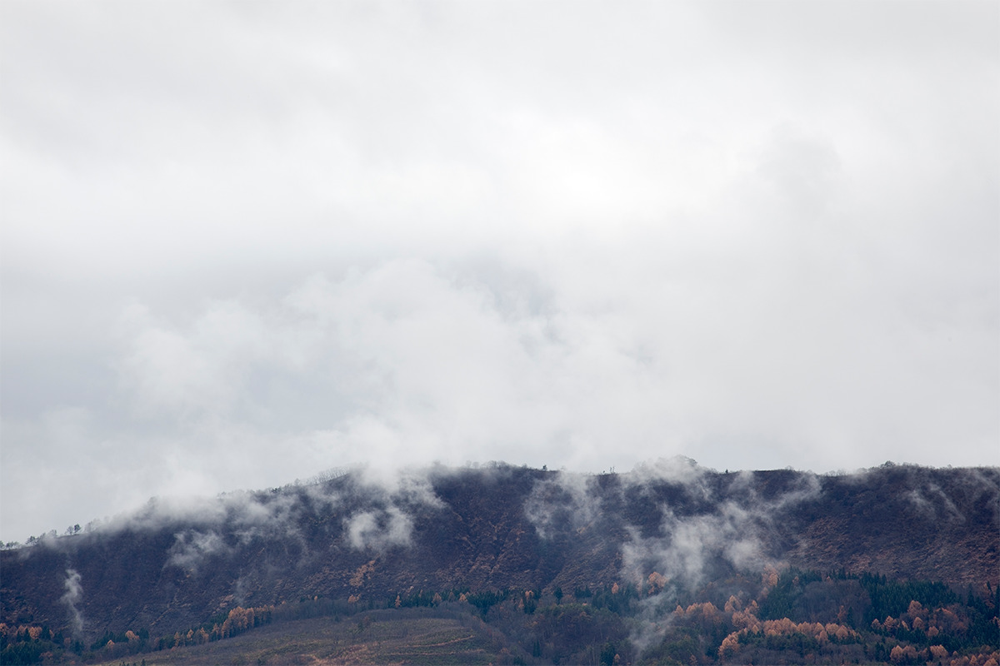
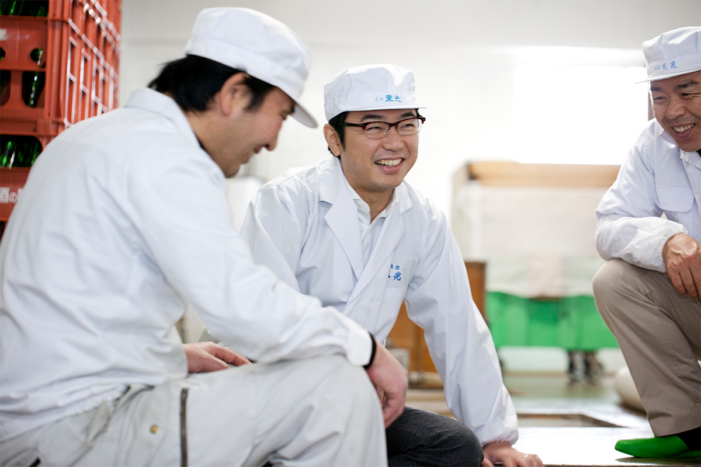
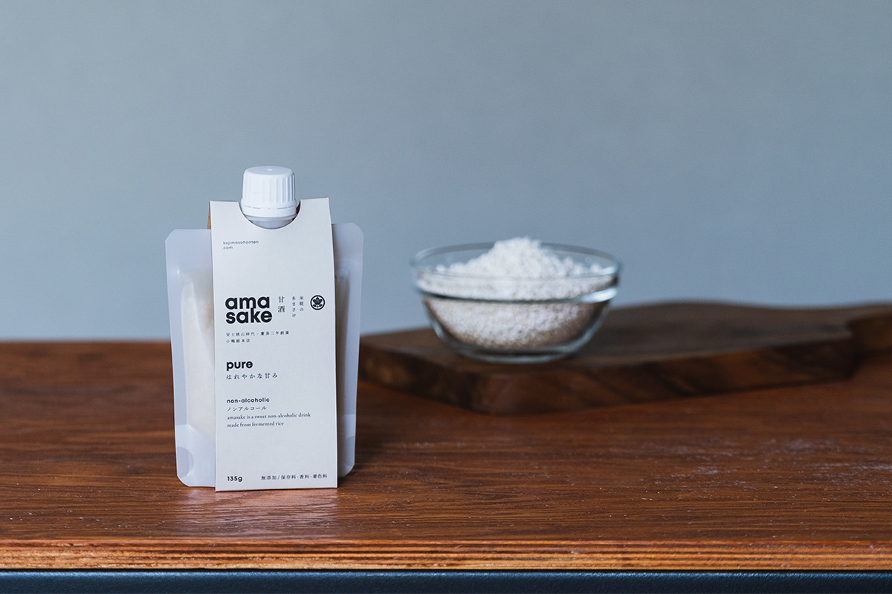
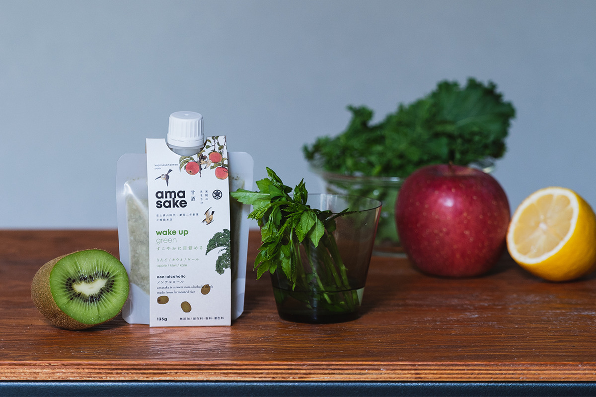
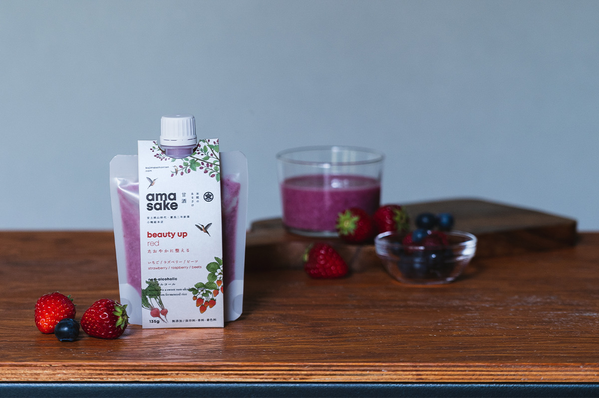

Префектура Ямагата · Ёнэдзава · сакэ
Kojima Sohonten: сакэварня из Ёнэдзавы, которая сделала амадзакэ с овощами и фруктами

Kojima Sohonten в Ёнэдзаве варит сакэ больше 400 лет. В 2021 году старинная сакэварня продавала амадзакэ нового вида: сладкий напиток из рисового кодзи, смешанный со смузи из овощей и фруктов.
Сакэварня
Больше 400 лет в Ёнэдзаве
Ёнэдзава лежит на юге префектуры Ямагата, и это бывший призамковый город рода Уэсуги. Сакэварню Kojima Sohonten основали здесь в эпоху Адзути-Момояма, в конце XVI века. Сакэварня стала поставщиком сакэ для дома Уэсуги. В Японии больше 1000 сакэварен, и по возрасту Kojima Sohonten стоит среди них на 13-м месте.
Здесь делают только дзюммай, сакэ из риса, кодзи и воды: спирт и другие добавки в него не кладут. Главная марка сакэварни называется «Токо». Она получила много наград на конкурсах в Японии и за рубежом, в мировом рейтинге сакэварен 2020 года заняла 37-е место с двумя звёздами, а в 2021 году её вывозили в 19 стран.

Глава сакэварни представляет 24-е поколение семьи. Он вырос при сакэварне, и в младенчестве его прикармливали амадзакэ из рисового кодзи. Поэтому для него это не просто напиток, а лёгкая для тела и питательная еда.
«Сегодня все заняты, и вокруг полно вещей, сделанных ради скорости и удобства. Но еда попадает внутрь тела. Поэтому хочется, чтобы она была не только удобной, но и естественной»
глава сакэварни Kojima Sohonten
Отсюда и замысел амадзакэ: напиток, который не страшно дать собственному ребёнку, в форме, удобной для сегодняшней жизни.
История
Город, который пережил голод

Чтобы понять, откуда взялся этот амадзакэ, нужно вспомнить историю Ёнэдзавы. Город известен как место, которое сумело подняться после голода. Помог ему Ёдзан Уэсуги (1751–1822), правитель княжества Ёнэдзава в эпоху Эдо, которого помнят как реформатора. Когда из-за проливных дождей размыло поля и по всей стране случился неурожай, он призвал людей есть то, что растёт рядом. Рассказывают, что тогда сладко тушили карпов, которых держали для красоты в замке Ёнэдзава, и ели даже сорные травы вроде побегов хвоща.
Одно из растений той поры до сих пор считается в Ёнэдзаве своей едой: это укоги. Его выращивание здесь поощряли ещё в эпоху Эдо, а корень используют как лекарственное сырьё. В Ёнэдзаве укоги сажают живой изгородью вокруг домов, и весной и в начале лета до сих пор едят его молодые побеги. Укоги вошёл и в один из видов амадзакэ Kojima Sohonten.
О бывшей резиденции рода Уэсуги в Ёнэдзаве можно прочитать в статье Уэсуги кинэнкан.
Амадзакэ
Смузи на основе кодзи
Основу серии «Амадзакэ из рисового кодзи» составлял безалкогольный амадзакэ без сахара из кодзи на рисе префектуры Ямагата. К нему добавляли смузи из овощей и фруктов, в том числе из местных продуктов, которые выращивают в Ямагате с эпохи Эдо: укоги и сои хидэн-мамэ. Амадзакэ в Японии называют «капельницей, которую пьют», и сакэварня хотела соединить его пользу с овощами и фруктами. Получились три вида для разного времени дня: для бодрого утра, для дневных дел и чистый амадзакэ. Консервантов, ароматизаторов и красителей в них не было, поэтому пить их могли и взрослые, и дети.

Рецепты всех трёх смесей составила фуд-директор и кулинар, а упаковку, непохожую на привычный амадзакэ, придумала креативная студия artless, известная далеко за пределами Японии. Проект вёл продюсер, который помогает японским ремесленникам и производителям.
Pure

Pure делали на 100% из рисового кодзи префектуры Ямагата. В нём есть витамины группы B и все незаменимые аминокислоты, а сакэварня готовила его с опытом брожения, накопленным за 400 лет. По калориям одна упаковка (135 г) чуть больше половины миски варёного риса. Его пьют холодным или тёплым, а можно добавить сок, соевое или обычное молоко, йогурт.
Wake up green и beauty up red
Wake up green задуман для утра. В смузи шли комацуна и кейл, богатые кальцием и железом, яблоко с клетчаткой, киви и лимон с витамином C, а также порошок укоги. Beauty up red рассчитан на день: в нём клубника, черника, малина, лимон и свёкла, которую называют «переливанием крови, которое едят». Вкус у него ягодный, и сакэварня советовала его и как перекус для детей. Из небольшого количества beauty up red с оливковым маслом, уксусом, солью и перцем получается розовая заправка для салата.


В 2025 году сакэварня объявила, что прекращает выпуск всей серии «Амадзакэ из рисового кодзи» из-за подорожания риса и материалов: продажи должны были закончиться до конца 2025 года, по мере того как заканчивался запас. Магазин, где в 2021 году продавали этот амадзакэ, находится при музее сакэ «Токо-но сакагура» в Ёнэдзаве, и музей работает и в 2026 году.
Музей сакэ «Токо-но сакагура», магазин
- Адрес
- префектура Ямагата, Ёнэдзава, Омати, 2-3-22
- Телефон
- +81 238-21-6601
- Часы работы
- 9:30–16:00